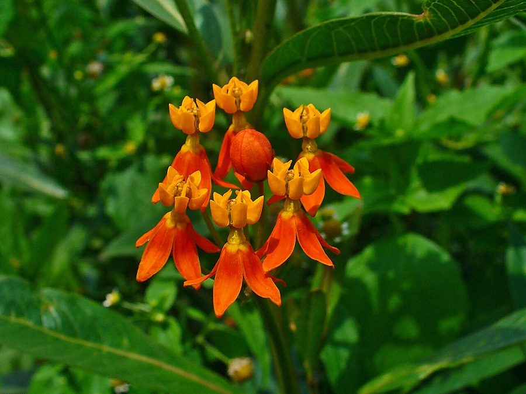

काकतुंडीTropical Milkweed
Asclepias curassavica · Apocynaceae · FLR-0252

- Scientific name वैज्ञानिक नाम
- Asclepias curassavica L.
- Family कुल
- Apocynaceae
- Hindi हिंदी
- काकतुंडी
- Local names स्थानीय नाम
- kakatundi, kaka tundi, tropical milkweed, milkweed
- Status here यहाँ की स्थिति
- naturalized
- Movement आवागमन
- Resident, here all year
- Known from कहाँ दर्ज
- Others have published records from the wider Awadh–Purvanchal plain, none yet from Basti–Ayodhya अवध–पूर्वांचल से दूसरों के प्रकाशित अभिलेख, बस्ती–अयोध्या से अभी नहीं
- IUCN IUCN
- not evaluated
- Review समीक्षा
- audited and independently read
When to look कब देखें
Present all year. साल भर मौजूद।
Tell it apart from इनसे अलग पहचानें
काकतुंडी / Tropical Milkweed
Asclepias curassavica L. — Apocynaceae
काकतुंडी (उष्णकटिबंधीय मिल्कवीड, "तितली पौधा") — एक तेज़ी से बढ़ने वाली झाड़ी जो अब पूर्वी उत्तर प्रदेश में व्यापक रूप से पाई जाती है। यह पौधा मूलतः अमेरिका के उष्णकटिबंधीय हिस्सों से आया है, लेकिन हिंदुस्तान में पिछले दो सौ साल में आम हो गया है। बहुत सुंदर, नारंगी और लाल रंग के फूल इसे तितलियों के लिए बहुत आकर्षक बनाते हैं। हालांकि, यह एक आक्रामक खरपतवार है जो स्थानीय पौधों को विस्थापित करता है। पूरे पौधे में सफ़ेद लेटेक्स होता है, जो विषैला है।
Quick Identification त्वरित पहचान
| Feature | Description |
|---|---|
| Plant habit | Bushy shrub, 0.5–1.5 m, erect, branching, semi-woody |
| Leaves | Opposite, simple, lanceolate to oblong, 6–12 cm, glabrous, apex acute, base attenuate |
| Flowers | Showy, orange and red (or bi-colored), 1.2–1.8 cm, in terminal or axillary umbels |
| Fruits | Slender follicles, 8–12 cm, containing many seeds with silky coma (hair-like appendages) |
| Stems | Green, smooth, becoming woody, producing white latex when broken |
| Latex | Milky white, toxic, present in all parts |
Field tip: In disturbed ground and waste areas, look for a bushy plant with orange-and-red flowers and opposite, narrow leaves. The flowers are distinctive and attractive. The ripe seed pods are long and slender, splitting to release seeds with silky hair-like structures. Break a stem and white latex will ooze out.
हिंदी — कैसे पहचानें: नारंगी-लाल फूल, आमने-सामने की पत्तियाँ, सफ़ेद दूध निकलता है, लंबी फलियाँ।
Morphology आकारिकी
Biometrics:
| Measurement | Range |
|---|---|
| Plant height | 0.5–1.5 m |
| Leaf length | 6–12 cm |
| Leaf width | 1.5–3.5 cm |
| Flower diameter | 1.2–1.8 cm |
| Follicle length | 8–12 cm |
| Follicle width | 0.6–0.8 cm |
Stems: Semi-woody, glabrous, green or purplish, branching from the base and throughout the plant, producing white latex.
Leaves: Opposite, simple, lanceolate to oblong-lanceolate, apex acute to acuminate, base attenuate, margins entire, glabrous on both surfaces.
Flowers: Bright orange-red or bi-colored (orange with red margins), in dense terminal or axillary umbels. Corolla five-lobed, reflexed; crown present with five fimbriate lobes (characteristic of Asclepiadoideae). Pollination primarily by insects.
Fruits: Slender, fusiform (spindle-shaped) follicles, containing numerous small, flat, dark brown seeds each bearing a tuft of white silky hairs (coma) for wind dispersal.
Latex: White, present in stem, leaves, and roots; contains cardiac glycosides and other toxins.
हिंदी: सफ़ेद दूध, नारंगी फूल, लंबी पतली फलियाँ, बहुत बीज।
Behaviour & Ecology व्यवहार और पारिस्थितिकी
A fast-growing, invasive herbaceous shrub native to tropical America, now naturalized across tropical Asia. It thrives in disturbed ground, particularly in waste areas, field margins, and along roadsides. The plant is highly competitive, producing allelopathic chemicals that inhibit the growth of neighboring plants. It sets seed profusely and disperses via wind, enabling rapid spread over large areas. While the plant is attractive to butterflies (particularly Danaid Eggfly and Common Wanderer) and serves as their host plant, its invasiveness and toxicity make it problematic in local ecosystems.
हिंदी: तेज़ी से बढ़ता है, जहर देता है, बहुत बीज देता है, दूसरे पौधों को दबाता है, लेकिन तितलियों को आकर्षित करता है।
Life Cycle / Phenology जीवन चक्र
| Month / season | Event |
|---|---|
| April–May | Active growth resumes in warm season |
| June–August | Rapid vegetative growth during monsoon; flowering begins |
| August–December | Continuous flowering and heavy fruit production |
| December–March | Continued growth and flowering; gradual decline in very cool months |
The plant is short-lived as individuals (2–5 years) but spreads rapidly through prolific seed production. Seeds germinate throughout the warm season whenever moisture is available.
हिंदी: साल भर बड़ता है, बरसात से तेज़, फूल गर्मी भर, बहुत बीज देता है।
Associated Species / Interactions संबंधित प्रजातियाँ
- Butterfly host: host plant for Danaid Eggfly and Common Wanderer Lepidoptera
- Invasive interactions: displaces Giant Milkweed, Asthma Weed, and native herbaceous vegetation
- Ecosystem impacts: forms monocultures where unchecked, particularly in monsoon-disturbed areas
Pests and Diseases कीट और रोग
Rarely affected by serious pests or diseases; the milkweed-feeding butterfly Danaid Eggfly caterpillars feed on it but do not significantly defoliate it. The latex toxins protect the plant from most herbivores. Occasionally affected by powdery mildew in humid conditions.
Agricultural / Human Relevance कृषि प्रासंगिकता
Invasiveness warning: Asclepias curassavica is listed as an invasive species in many tropical regions of Asia, Africa, and the Pacific. It is a significant weed problem in cultivated areas where it competes aggressively with crops and native vegetation. In eastern Uttar Pradesh, it is increasingly common in disturbed areas and poses a threat to local biodiversity.
Toxicity and safety: The entire plant, particularly the latex and roots, contains cardiac glycosides and other toxic compounds. Ingestion causes gastrointestinal distress. Skin contact with the latex can cause dermatitis in sensitive individuals.
Agricultural impact. A problematic weed in field margins and disturbed areas; difficult to control once established due to persistent soil seed banks. Control requires persistent removal or herbicide application.
Ecological impact. The species forms aggressive stands that exclude native vegetation, particularly in monsoon-disturbed ground and fallow fields. Its allelopathic properties further inhibit competition from other plants.
Positive aspect. Despite its invasiveness, the plant serves as an important host plant for Danaid Eggfly (Hypolimnas misippus) and Common Wanderer (Pareronia anais) butterflies, which have shifted their dependence from native Calotropis and other milkweeds.
हिंदी: खतरनाक खरपतवार है, दूसरे पौधों को दबाता है, जहरीला है, लेकिन तितलियों के लिए ज़रूरी बन गया है।
Expected Locally स्थानीय रूप से अपेक्षित
Not a field record. Written from published accounts for eastern Uttar Pradesh. No confirmed local sighting yet — if you have seen it, that is what the atlas needs.
अभी तक स्थानीय पुष्टि नहीं। यह विवरण प्रकाशित स्रोतों से है, किसी अवलोकन से नहीं।
GBIF holds published records from the wider Awadh–Purvanchal plain. To be expected in waste ground, field margins, and disturbed areas throughout the region from June through February. Increasingly common and spreading; likely present in all districts.
Distribution वितरण
Global range: Native to tropical America (Mexico through South America); now naturalized across tropical Asia, Africa, and the Pacific islands.
In India: Widespread across the Indo-Gangetic plain and in southern and eastern India; common in disturbed ground.
In Uttar Pradesh: Increasingly widespread, particularly in monsoon-disturbed areas and field margins.
In Basti district / eastern UP: Likely widespread but not yet comprehensively documented.
Research Questions शोध प्रश्न
Anyone can investigate these | कोई भी इन प्रश्नों की जाँच कर सकता है
- Where is Asclepias curassavica most common in your area, and how is it spreading? / काकतुंडी आपके इलाक़े में कहाँ अधिक है, और कैसे फैल रहा है? — Map populations in June and November.
- Does it really inhibit the growth of nearby plants, and if so, what chemical is responsible? / क्या यह सचमुच दूसरे पौधों को दबाता है? — Compare growth of native plants near and far from milkweed stands.
- How many seeds does one plant produce in a season, and how far do they disperse? / एक पौधा कितने बीज देता है? — Collect fruits and count; mark and track seed dispersal.
- Which butterflies use this plant as a host, and do they also use native milkweeds? / कौन सी तितलियाँ इसे खाती हैं? — Observe and count butterflies and their caterpillars.
- What is the most effective method to control it in a small area without damaging native plants? / इसे कैसे हटाएँ? — Trial different removal and herbicide methods.
Similar Species मिलती-जुलती प्रजातियाँ
| Species | How to tell apart | हिंदी |
|---|---|---|
| Giant Milkweed (Calotropis gigantea) | Much larger shrub; leaves grey-woolly; flowers white or pale; from different genus | बहुत बड़ा झाड़, सफ़ेद फूल, पत्तियाँ रुई जैसी |
| Asthma Weed (Tylophora or related genera) | Lower herb; different flower structure; typically found in more shaded areas | कम ऊँचा, अलग फूल |
Field rule: A semi-woody bush with opposite, narrow leaves, showy orange-and-red flowers, slender seed pods, and white latex is Asclepias curassavica.
Taxonomy & Classification वर्गीकरण
Original description. Described by Linnaeus in 1753 in Species Plantarum. The epithet curassavica refers to Curaçao in the Caribbean, though the plant's native range extends more broadly through tropical America.
Subspecies. Monotypic — no subspecies are currently recognised; however, some geographic variation exists.
Family and order placement. Apocynaceae (the dogbane family), order Gentianales. The genus Asclepias contains about 140 species found mainly in the Americas but with one African species and numerous naturalized populations across the tropics.
Phylogenetic notes. Asclepias belongs to the Asclepiadoideae subfamily of Apocynaceae; it is related to Oxystelma and other tropical milkweeds but is distinguished by its larger flowers and more aggressive growth habit.
IUCN status rationale. Not evaluated. A widespread invasive species but not currently assessed by the IUCN. No conservation concern for the species itself; conservation concern is for ecosystems it invades.
Photo Gallery फोटो गैलरी
Photos needed आवश्यक फोटो
- [ ] Whole plant in a waste area, September (पूरा पौधा)
- [ ] Orange-red flowers close-up (नारंगी-लाल फूल)
- [ ] Seed pods and dispersing seeds (फलियाँ और बीज)
No photos yet — add field photos to media/species/tropical_milkweed/ and run node scripts/sync_photos.js.
References संदर्भ
- Linnaeus, C. (1753). Species Plantarum, ed. 2. Stockholm. [original description]
- Hooker, J.D. (1882). The Flora of British India, vol. 4. L. Reeve, London. (Asclepias)
- Duthie, J.F. (1903). Flora of the Upper Gangetic Plain and of the Adjacent Siwalik and Sub-Himalayan Tracts. Government Printing, Calcutta.
- Kehimkar, I. (2008). The Butterflies of India, 2nd ed. Bombay Natural History Society and Oxford University Press, New Delhi.
- Global Invasive Species Database (2020). Species profile: Asclepias curassavica. Invasive Species Specialist Group. [www.iucngisd.org]
- GBIF Occurrence Data — Asclepias curassavica, India (2026).
Source file: species/flora/weeds/tropical_milkweed.md